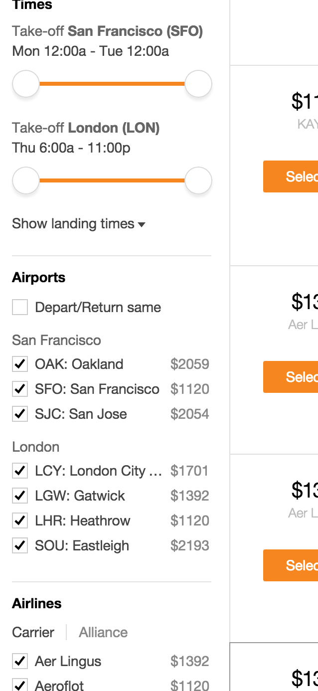
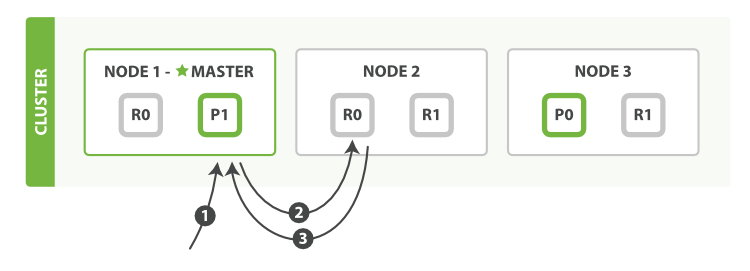

Elasticsearch for PHP Developers
Shaunak Kashyap • @shaunak
Why use Elasticsearch?
Full text search
Structured search

Faceted navigation

Analytics

Features
- Easy to get started — download, extract, run!
- Scalable — just add or remove nodes as needed
- Well-documented HTTP API
- Supported clients for PHP, Python, ..., even Perl ☻
Concepts
- Document
- The unit of data fed into Elasticsearch, in JSON format
- Index
- A collection of documents stored in Elasticsearch
- Type
- The category of the document within an index
- Shard
- A part of an index, consisting of a subset of documents in that index
- Node
- A running Elasticsearch process
- Cluster
- A collection of nodes that can communicate with each other and share the same
cluster.name
Why use the PHP client?
- Uses language idioms
- Low-level and unopinionated: maps 1-1 with HTTP API
- Cluster sniffing
- Load balances amongst nodes
- Detects and gracefully handles node failures
- Officially supported by Elastic
- Well-documented API
Installation & Usage
$ php composer.phar require elasticsearch/elasticsearch
<?php
require 'vendor/autoload.php';
$client = new Elasticsearch\Client();
Indexing a document

Retrieving a document

Searching for documents
Query Phase

Fetch Phase

Recipe Demo
https://github.com/elastic/examples/tree/master/elasticsearch_app_php_recipe_search